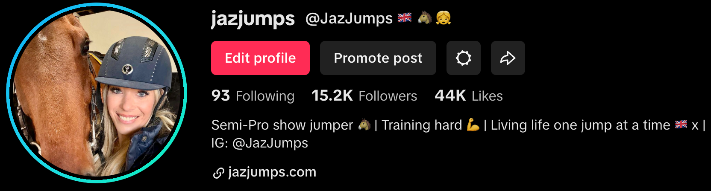

When I wrote my thank you post at 5,000 followers, I genuinely thought that would be the peak. I remember staring at my phone in disbelief, refreshing the app over and over again, convinced there had been some kind of mistake. Five thousand people wanting to follow along with my journey? Unbelievable.
And now here we are. Fifteen thousand followers. Over half a million views. I still can't quite wrap my head around it.
The Numbers
Let me just write them down so I can try to make them feel real:
- 15,000+ followers
- 550,000+ views
That's 15,000 people from all over the world who've chosen to follow a girl from a small village in Suffolk and her horse. People who want to see our training sessions, our competition prep, our daily life at the yard. It's honestly overwhelming in the best possible way.
What This Means
Back in November when I first joined TikTok, I had one goal: document my journey to becoming a professional show jumper and maybe—just maybe—attract some sponsors along the way to help fund competitions like the Andalucia Sunshine Tour.
This growth has opened doors I never expected. Brands have started reaching out. Conversations are happening. The dream of competing at the highest levels feels more achievable than ever because of the incredible support from this community.
The Real Gift
But honestly, the numbers aren't even the best part. What I treasure most are the connections I've made. The messages from riders who tell me they're going through similar journeys. The young girls who say they're inspired to chase their own dreams. The experienced equestrians who share their wisdom and encouragement.
This community has become so much more than followers on an app. You're part of my team now. Every like, every comment, every share—you're helping me get one step closer to my goals.
What's Next
With the Sunshine Tour just around the corner in March, I'm focusing on final preparations with DJ. The training is going well, and I can't wait to share every moment of our Spanish adventure with you.
I'll keep posting, keep sharing, and keep being authentically me. That's what got us here, and that's what will take us further. Whether it's the good days or the challenging ones, you'll see it all.
Thank You
To every single one of you—whether you've been here since day one or you've just joined—thank you. Thank you for believing in a girl with a dream and a horse who doesn't know any different than to give his all every time we enter the ring.
This is just the beginning. Let's see where we can go together.
— Jasmine 🇬🇧🐴👧 x